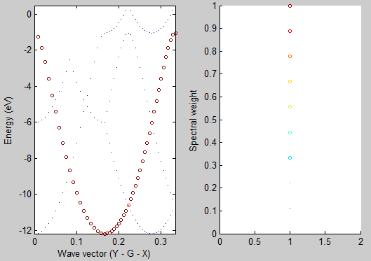

Supercells are often used in electronic structure calculations in order to model compound alloys, defects, etc.
The band structure obtained directly from these calculations is hard to interpret due to the Brillouin zone folding
as a result of its reduced size for the supercell, compared to that for the unperturbed host unit cell.
This lesson aims at demonstrating how to unfold the band structure of a supercell and
present it in the basis of conventional Bloch wave vectors inherent to the unperturbed unit cell.
We will construct a supercell of 6 hydrogen atoms, perform self-consistent cycle and plot the corresponding band structure.
At the end, we will recover the familiar dispersion relation using the fold2Bloch utility.
See also the fold2bloch help file.
This lesson should take about 1 hour.
Let's begin with the simplest structure: a lattice of hydrogen atoms. It is a convenient starting point since the hybridization between s-orbitals results in a well known dispersion relation for the energy eigenvalues as a function of the wave vector "k"
E(k) = E0 - 2A cos(k b)
Here "b" is the lattice spacing and "A" reflects the strength of hybridization between adjacent s-orbitals. For more details please refer to the Feynman's Lectures on Physics (vol 3, chapter 13).
Our model structure will be a cubic lattice of hydrogen atoms spaced 3 Bohr apart. The primitive cell contains only one atom. Here we chose to represent the same structure with a 6 atom supercell. Such a large cell is redundant in this case, since there is nothing that disturbs the original symmetry. However, we made this choice on purpose in order to observe the zone folding.
Fig. 1: Primitive unit cell (a) and 1x2x3 supercell (b) that represent a cubic lattice of hydrogen atoms.
Since we are interested in the band structure, we need to select a path in the reciprocal space which will be used for plotting. The supercell was expanded in Y and Z directions. Accordingly, the reciprocal space shrinks along the same directions. We select those directions for the band structure plot as they will be affected by the zone folding.

Fig. 2: Brillouin zone of the supercell.
Before beginning, you might consider to work in a different subdirectory as for the other lessons. Why not "Work_fold2Bloch" ?
In order to use the fold2Bloch, you need to first generate a wave function file (_WFK file).
In the directory ~abinit/tests/tutorial/Input/Work_fold2Bloch, copy the files ~abinit/tests/tutorial/Input/tfold2bloch_1.files and ~abinit/tests/tutorial/Input/tfold2bloch_1.in. The input file has two datasets, the first to generate the _WFK file, and the second to draw the band structure.
Now you are ready to run Abinit. Issue the following :
This will generate a self consistent charge density for the 6 Hydrogen atom supercell structure, and the wave function file, tfold2bloch_1o_WFK, which is needed for unfolding with fold2Bloch.
energy_eig-abinit.sh; and plot_band.m
which are located at /abinit/doc/tutorial/lesson_fold2Bloch/
Execute the energy_eig-avinit.sh script
Edit plot_band.m file and point to the newly created tfold2bloch_1o_DS2_EIG.dat file.
Then, run the plot_band.m script in MatLab
>>plot_band
This will plot the band structure of the 6 atom Hydrogen supercell created.
Lastly, compare the image obtained to the band structure image below.

Fig. 3: 6 atom hydrogen supercell band structure plot
Here you can see that the band structure does not look like a cosine function along directions Y-Gamma and Z-Gamma. The band structure is folded according to the multiplicity along those directions used when constructing the supercell (Fig. 1b).
Execute the following command:
You should see the following:
*********************** ** Fold2Bloch V 1.0 ** **Build Oct 16, 2014** *********************** 2% Processing K point: 0.000000 -0.500000 0.000000 4% Processing K point: 0.000000 -0.450000 0.000000 6% Processing K point: 0.000000 -0.400000 0.000000 ... 95% Processing K point: 0.000000 0.000000 0.400000 97% Processing K point: 0.000000 0.000000 0.450000 100% Processing K point: 0.000000 0.000000 0.500000 Number of K points processed: 43 Data was written to: fold2Bloch.out Data format: KX, KY, KZ, Eigenvalue(Ha), Weight
That output tells us which K-point was processed, total number of K-points processed, outputfile, and the format that the data is written in.
Now take a look at the "fold2Bloch.out". The first few lines should be as follows:
0.000000 -0.250000 0.000000 -0.317960 0.579542 0.000000 -0.250000 0.333333 -0.317960 0.000000 0.000000 -0.250000 -0.333333 -0.317960 0.000000 0.000000 0.250000 0.000000 -0.317960 0.420458 0.000000 0.250000 0.333333 -0.317960 0.000000 0.000000 0.250000 -0.333333 -0.317960 0.000000 0.000000 -0.250000 0.000000 -0.317960 0.420458 0.000000 -0.250000 0.333333 -0.317960 0.000000 0.000000 -0.250000 -0.333333 -0.317960 0.000000 0.000000 0.250000 0.000000 -0.317960 0.579542 0.000000 0.250000 0.333333 -0.317960 0.000000 0.000000 0.250000 -0.333333 -0.317960 0.000000 0.000000 -0.250000 0.000000 -0.093527 0.000000 0.000000 -0.250000 0.333333 -0.093527 0.315820 0.000000 -0.250000 -0.333333 -0.093527 0.251111 0.000000 0.250000 0.000000 -0.093527 0.000000 0.000000 0.250000 0.333333 -0.093527 0.144884 0.000000 0.250000 -0.333333 -0.093527 0.288185 0.000000 -0.250000 0.000000 -0.093527 0.000000 0.000000 -0.250000 0.333333 -0.093527 0.494070 0.000000 -0.250000 -0.333333 -0.093527 0.103712 0.000000 0.250000 0.000000 -0.093527 0.000000 0.000000 0.250000 0.333333 -0.093527 0.386301 0.000000 0.250000 -0.333333 -0.093527 0.015917 ...
Let's take a moment to analyse the output. Columns 1-3 correspond to kx,ky and kz of the unfolded bands; the 4th column is the energy eigenvalue in [Ha] and the 5th column corresponds to a spectral weight of the k-point after unfolding. Do not confuse it with k-point weight, which represents its multiplicity in the Brillouin zone. Since our supercell contains 6 unit cells (1x2x3), each eigenvalue in the solution contains information about 6 Bloch wave vectors, i.e., unfolded into 6 k-points. The relative contribution of these k-points is determined by the spectral weight.
Lines 1-6 represent unfolding of the 1st eigenvalue of -0.31796 Ha. This eigenvalue corresponds to the Bloch wave vectors of (0 ±1/2 0) as they have a non-zero weight. The weights total 1 for normalization. This eigenvalue is degenerate, so lines 7-12 look very similar. When a disorder is present (in a form of defects, distortions, impurities) individual eigenstates may not express an exclusive Bloch character any longer. This can have some interesting consequences for transport or optical properties, which are not apparent from the folded band structure.
Note: the whole output is much bigger than the sample provided above. For the band structure visualization proceed to the next step.
Make sure the following parameters in ubs_dots.m are set as follows:
KPATH = [0 1/2 0; ... 0 0 0; ... 0 0 1/2]; finpt='tfold2bloch_1o.f2b';
and:
G = [0.3333333 0.0000000 0.0000000; 0.000000 0.1666667 0.0000000; 0.000000 0.000000 0.1111111]; % Reciprocal latt. vect. [Bohr^-1] from *.out
Reciprocal lattice vector information must match that in tfold2bloch_1.out:
Real(R)+Recip(G) space primitive vectors, cartesian coordinates (Bohr,Bohr^-1): R(1)= 3.0000000 0.0000000 0.0000000 G(1)= 0.3333333 0.0000000 0.0000000 R(2)= 0.0000000 6.0000000 0.0000000 G(2)= 0.0000000 0.1666667 0.0000000 R(3)= 0.0000000 0.0000000 9.0000000 G(3)= 0.0000000 0.0000000 0.1111111 Unit cell volume ucvol= 1.6200000E+02 bohr^3 Angles (23,13,12)= 9.00000000E+01 9.00000000E+01 9.00000000E+01 degrees
For graphing any other fold2Bloch output, make sure that the "%%Init Parameters" are set accordinly to size of the supercell constructed.
After running the script you should see the following graph:

As you can see the unfolded band structure perfectly reproduces the anticipated dispersion relation E(k) = E0 - 2A cos(k b). We can even estimate the magnitude of the hopping matrix element between adjacent atoms VssG = -A. The band width is 4A = (-1) - (-12) = 11 eV which results in VssG = -2.75 eV.
You reached the end of the lesson on how to unfold a simplest band structure.